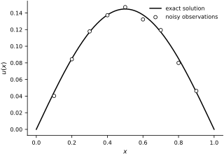
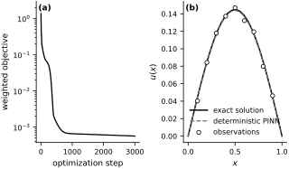
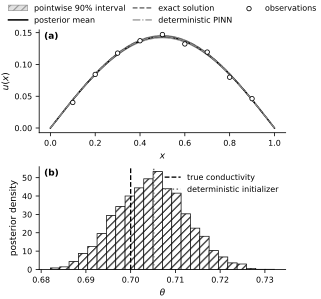

Bayesian PINNs for Inverse Problems#
In the previous notebook we trained a deterministic inverse PINN and recovered a single best-fit value of the unknown conductivity. The remaining inverse-problem question is the uncertainty in that conductivity and in the reconstructed state.
Bayesian physics-informed neural networks (B-PINNs) address this question by defining a posterior distribution over the unknown quantities rather than returning only one optimizer output. The general framework was introduced by Yang et al. (2021), building directly on the PINN formulation of Raissi et al. (2019).
Bayesian inference for a large neural network can be expensive, so this notebook uses a deliberately small example. We keep the same one-dimensional diffusion inverse problem and infer the 25 network parameters together with the unknown conductivity. The resulting posterior is conditional on this finite network, the selected collocation points, and the noise scales specified below.
Problem setup#
We again study
with unknown conductivity \(\theta > 0\).
The exact solution is still
and we use it only to manufacture noisy observations. The difference from the previous notebook is not the PDE. It is the inference target. Instead of searching for a single minimizer of the PINN loss, we will sample from a posterior distribution over the neural-network parameters and \(\theta\).
In B-PINNs the PDE residual is treated as another source of information. We introduce a Gaussian pseudo-likelihood for the residual values at 15 collocation points. This is a finite approximation to enforcing the continuum PDE, and its scale represents a chosen tolerance for residual mismatch rather than measured process noise.
true_theta = 0.7
noise_std = 3e-3
width = 8
n_obs = 9
def source_term(x):
return jnp.sin(jnp.pi * x)
def exact_solution(x, theta=true_theta):
return jnp.sin(jnp.pi * x) / (theta * jnp.pi**2)
key = jr.PRNGKey(11)
key, noise_key = jr.split(key)
x_obs = jnp.linspace(0.1, 0.9, n_obs)
y_clean = exact_solution(x_obs)
y_obs = y_clean + noise_std * jr.normal(noise_key, x_obs.shape)
x_phys = jnp.linspace(0.0, 1.0, 17)[1:-1]
xs_plot = jnp.linspace(0.0, 1.0, 200)
fig, ax = new_figure("full_standard")
ax.plot(
xs_plot, exact_solution(xs_plot), color="black", linestyle="-",
linewidth=1.5, label="exact solution"
)
ax.scatter(
x_obs, y_obs, s=24, facecolors="white", edgecolors="black",
linewidths=0.8, zorder=3, label="noisy observations"
)
ax.set(xlabel=r"$x$", ylabel=r"$u(x)$")
ax.legend(loc="upper right")
finalize_axes(ax)
plt.show()
{kind=link}

Fig. 56 Synthetic data for the Bayesian inverse problem. The solid curve is the exact solution \(u^\star(x;\theta_{\mathrm{true}})\) for \(\theta_{\mathrm{true}}=0.7\); open circles are the nine observations corrupted by independent Gaussian noise with standard deviation \(3\times 10^{-3}\).#
A small PINN parameterization#
To keep Hamiltonian Monte Carlo affordable, we use a tiny one-hidden-layer network with eight hidden units. As before, the boundary conditions are enforced by construction:
The conductivity is written as \(\theta = e^{\eta}\) so positivity is automatic. In this notebook the unknowns are the weight vector \(\mathbf{w}\) and the transformed conductivity parameter \(\eta\).
n_nn_params = 3 * width + 1
def unpack(nn_params):
w1 = nn_params[:width]
b1 = nn_params[width:2 * width]
w2 = nn_params[2 * width:3 * width]
b2 = nn_params[-1]
return w1, b1, w2, b2
def pinn_solution(x, nn_params):
w1, b1, w2, b2 = unpack(nn_params)
hidden = jnp.tanh(w1 * x + b1)
out = jnp.dot(w2, hidden) + b2
return x * (1.0 - x) * out
def pinn_residual(x, nn_params, theta):
u_x = grad(lambda z: pinn_solution(z, nn_params))
u_xx = grad(u_x)
return -theta * u_xx(x) - source_term(x)
total_dim = n_nn_params + 1
print(f"Bayesian parameter dimension: {total_dim}")
Bayesian parameter dimension: 26
Deterministic initialization#
Sampling works better when we initialize near a sensible part of parameter space. We therefore minimize the weighted deterministic PINN objective from the previous notebook and use the result to initialize NUTS. Its weights do not match the prior and likelihood scales in the Bayesian model below, so this point is not a maximum a posteriori estimate.
The fitted curve also provides a deterministic reference for the posterior summaries.
def deterministic_loss(params, x_obs, y_obs, x_phys, lambda_data=50.0, lambda_pde=1.0):
nn_params = params[:-1]
log_theta = params[-1]
theta = jnp.exp(log_theta)
pred_obs = vmap(lambda x: pinn_solution(x, nn_params))(x_obs)
residual_values = vmap(lambda x: pinn_residual(x, nn_params, theta))(x_phys)
data_loss = jnp.mean((pred_obs - y_obs) ** 2)
pde_loss = jnp.mean(residual_values ** 2)
prior_penalty = 1e-4 * jnp.mean(params ** 2)
return lambda_data * data_loss + lambda_pde * pde_loss + prior_penalty
key, init_key = jr.split(key)
deterministic_params = jnp.concatenate([
0.1 * jr.normal(init_key, (n_nn_params,)),
jnp.array([jnp.log(1.5)]),
])
optimizer = optax.adam(1e-2)
opt_state = optimizer.init(deterministic_params)
@jax.jit
def deterministic_step(params, opt_state):
loss_value, grads = jax.value_and_grad(deterministic_loss)(params, x_obs, y_obs, x_phys)
updates, opt_state = optimizer.update(grads, opt_state, params)
params = optax.apply_updates(params, updates)
return params, opt_state, loss_value
deterministic_history = []
for step in range(3000):
deterministic_params, opt_state, loss_value = deterministic_step(deterministic_params, opt_state)
deterministic_history.append(float(loss_value))
if step % 500 == 0 or step == 2999:
print(f"step={step:4d} loss={float(loss_value):.6f} theta={float(jnp.exp(deterministic_params[-1])):.4f}")
deterministic_theta = float(jnp.exp(deterministic_params[-1]))
deterministic_pred = vmap(
lambda x: pinn_solution(x, deterministic_params[:-1])
)(xs_plot)
fig, axes = new_figure("full_landscape", ncols=2)
axes[0].semilogy(
deterministic_history, color="black", linestyle="-", linewidth=1.3
)
axes[0].set(xlabel="optimization step", ylabel="weighted objective")
axes[1].plot(
xs_plot, exact_solution(xs_plot), color="black", linestyle="-",
linewidth=1.5, label="exact solution"
)
axes[1].plot(
xs_plot, deterministic_pred, color="0.45", linestyle="--",
linewidth=1.3, label="deterministic PINN"
)
axes[1].scatter(
x_obs, y_obs, s=20, facecolors="white", edgecolors="black",
linewidths=0.8, zorder=3, label="observations"
)
axes[1].set(xlabel=r"$x$", ylabel=r"$u(x)$")
axes[1].legend(loc="lower center", handlelength=2.4)
label_panels(axes)
finalize_axes(axes)
plt.show()
{kind=link}

Fig. 57 Deterministic initialization. (a) Weighted inverse-PINN objective during optimization. (b) Exact state, deterministic PINN state, and observations. This optimizer output initializes NUTS; it is not the MAP estimate of the Bayesian model below.#
Bayesian PINN model#
Let \(\mathbf{w}=(w_1,\ldots,w_{25})\) collect the network parameters and let \(\eta=\log\theta\). We assign the independent priors
The last transformation gives a lognormal prior for the positive conductivity. At the \(N_d=9\) sensor locations, the observation model is
Define the residual
At the \(N_r=15\) collocation points, we use the pseudo-observation model
Assuming conditional independence across sensors and collocation points, these factors and the priors define \(p(\mathbf{w},\eta\mid\mathbf{y},\mathbf{r}=\mathbf{0})\). The residual factor supplies the physics information. Its scale \(\sigma_\mathrm{PDE}\) is a modeling tolerance: changing it, or changing the number and locations of collocation points, changes the posterior.
sigma_pde = 0.02
def bpinn_model(x_obs, y_obs, x_phys):
nn_params = numpyro.sample("nn_params", dist.Normal(0.0, 1.0).expand([n_nn_params]))
log_theta = numpyro.sample("log_theta", dist.Normal(jnp.log(1.0), 0.5))
theta = jnp.exp(log_theta)
pred_obs = vmap(lambda x: pinn_solution(x, nn_params))(x_obs)
pred_res = vmap(lambda x: pinn_residual(x, nn_params, theta))(x_phys)
numpyro.sample("y", dist.Normal(pred_obs, noise_std).to_event(1), obs=y_obs)
numpyro.sample("r", dist.Normal(pred_res, sigma_pde).to_event(1), obs=jnp.zeros_like(x_phys))
Posterior sampling and diagnostics#
We run four sequential NUTS chains, using 1,000 warmup iterations and retaining 1,000 draws from each chain. Each transition differentiates through the network and its second spatial derivative at all collocation points, so this approach becomes expensive as the network and collocation set grow.
Neural-network parameterizations have symmetries, so individual weight coordinates can mix slowly even when the inferred conductivity and state are stable. We therefore report split-\(\widehat{R}\) and effective sample size for \(\theta\) and for the representative state value \(u(0.5)\), together with the number of divergent transitions. These diagnostics can reveal sampling problems; they do not prove convergence.
init_values = {
"nn_params": deterministic_params[:-1],
"log_theta": deterministic_params[-1],
}
nuts = NUTS(
bpinn_model,
init_strategy=init_to_value(values=init_values),
target_accept_prob=0.9,
)
mcmc = MCMC(
nuts, num_warmup=1000, num_samples=1000, num_chains=4,
chain_method="sequential", progress_bar=False,
)
key, mcmc_key = jr.split(key)
mcmc.run(mcmc_key, x_obs=x_obs, y_obs=y_obs, x_phys=x_phys)
posterior_by_chain = mcmc.get_samples(group_by_chain=True)
posterior = mcmc.get_samples()
divergences = int(mcmc.get_extra_fields()["diverging"].sum())
theta_by_chain = jnp.exp(posterior_by_chain["log_theta"])
theta_samples = jnp.exp(posterior["log_theta"])
u_mid_by_chain = vmap(
vmap(lambda nn_params: pinn_solution(0.5, nn_params))
)(posterior_by_chain["nn_params"])
diagnostics = diagnostic_summary(
{"theta": theta_by_chain, "u_mid": u_mid_by_chain}, group_by_chain=True
)
theta_diagnostics = diagnostics["theta"]
midpoint_diagnostics = diagnostics["u_mid"]
print("Chains: 4; warmup: 1,000 per chain; retained: 1,000 per chain")
print(f"Posterior mean conductivity: {theta_samples.mean():.4f}")
print(f"Posterior std conductivity: {theta_samples.std():.4f}")
print(f"90% credible interval: [{jnp.quantile(theta_samples, 0.05):.4f}, {jnp.quantile(theta_samples, 0.95):.4f}]")
print(f"theta R-hat / ESS: {float(theta_diagnostics['r_hat']):.3f} / {float(theta_diagnostics['n_eff']):.0f}")
print(f"u(0.5) R-hat / ESS: {float(midpoint_diagnostics['r_hat']):.3f} / {float(midpoint_diagnostics['n_eff']):.0f}")
print(f"Divergences: {divergences}")
Chains: 4; warmup: 1,000 per chain; retained: 1,000 per chain
Posterior mean conductivity: 0.7047
Posterior std conductivity: 0.0078
90% credible interval: [0.6920, 0.7177]
theta R-hat / ESS: 1.008 / 250
u(0.5) R-hat / ESS: 1.004 / 405
Divergences: 0
posterior_curves = vmap(
lambda nn_params: vmap(lambda x: pinn_solution(x, nn_params))(xs_plot)
)(posterior["nn_params"])
curve_mean = posterior_curves.mean(axis=0)
curve_q05 = jnp.quantile(posterior_curves, 0.05, axis=0)
curve_q95 = jnp.quantile(posterior_curves, 0.95, axis=0)
theta_deterministic = jnp.exp(deterministic_params[-1])
fig, axes = new_figure("full_tall", nrows=2)
axes[0].fill_between(
xs_plot, curve_q05, curve_q95, facecolor="0.88", edgecolor="0.55",
linewidth=0.6, hatch="///", label="pointwise 90% interval"
)
axes[0].plot(
xs_plot, curve_mean, color="black", linestyle="-",
linewidth=1.5, label="posterior mean"
)
axes[0].plot(
xs_plot, exact_solution(xs_plot), color="0.35", linestyle="--",
linewidth=1.3, label="exact solution"
)
axes[0].plot(
xs_plot, deterministic_pred, color="0.55", linestyle="-.",
linewidth=1.2, label="deterministic PINN"
)
axes[0].scatter(
x_obs, y_obs, s=20, facecolors="white", edgecolors="black",
linewidths=0.8, zorder=3, label="observations"
)
axes[0].set(xlabel=r"$x$", ylabel=r"$u(x)$")
axes[0].legend(
loc="lower center", bbox_to_anchor=(0.5, 1.02), ncol=3,
borderaxespad=0.0, columnspacing=0.9, handlelength=2.4,
)
axes[1].hist(
theta_samples, bins=24, density=True, facecolor="white",
edgecolor="black", linewidth=0.7, hatch="///"
)
axes[1].axvline(
true_theta, color="black", linestyle="--", linewidth=1.3,
label="true conductivity"
)
axes[1].axvline(
theta_deterministic, color="0.45", linestyle=":", linewidth=1.5,
label="deterministic initializer"
)
axes[1].set(xlabel=r"$\theta$", ylabel="posterior density")
axes[1].legend(loc="upper right")
label_panels(axes)
finalize_axes(axes)
plt.show()
{kind=link}

Fig. 58 Bayesian inverse-PINN posterior summaries. (a) Posterior mean of the latent state and the pointwise 90% credible interval, together with the exact and deterministic states and the observations. The interval excludes new measurement noise. (b) Marginal posterior density of the conductivity, with the true value and deterministic initializer shown for reference.#
posterior_mean_curve = curve_mean
rel_l2_deterministic = (
jnp.linalg.norm(deterministic_pred - exact_solution(xs_plot))
/ jnp.linalg.norm(exact_solution(xs_plot))
)
rel_l2_bayes = jnp.linalg.norm(posterior_mean_curve - exact_solution(xs_plot)) / jnp.linalg.norm(exact_solution(xs_plot))
print(f"Deterministic conductivity: {float(theta_deterministic):.4f}")
print(f"Posterior mean conductivity: {float(theta_samples.mean()):.4f}")
print(f"Deterministic relative L2: {float(rel_l2_deterministic):.4f}")
print(f"Posterior mean L2 error: {float(rel_l2_bayes):.4f}")
Deterministic conductivity: 0.7052
Posterior mean conductivity: 0.7047
Deterministic relative L2: 0.0073
Posterior mean L2 error: 0.0070
The deterministic and posterior-mean answers are close because this manufactured inverse problem is well identified. For \(\theta>0\), the exact state \(u^\star(x;\theta)=\sin(\pi x)/(\theta\pi^2)\) is injective in \(\theta\) at every interior point where \(\sin(\pi x)\ne0\). With noisy data, the posterior is concentrated in this run, conditional on the selected priors and residual pseudo-likelihood.
The four-chain diagnostics above assess the identifiable conductivity and the representative state value \(u(0.5)\). Values of \(\widehat{R}\) near one, adequate effective sample sizes, and no divergent transitions provide evidence against obvious sampling failure for these summaries, but they do not establish that every neural-network weight coordinate has mixed.
The retained draws approximate the posterior distribution. The shaded region is the pointwise interval between the 5th and 95th percentiles of the latent state \(u_\mathbf{w}(x)\); it is neither a simultaneous band nor a posterior-predictive interval for a new noisy observation. Its width is conditional on the network architecture, the fixed observation-noise scale, and the 15 collocation points. The residual scale sigma_pde is a modeling tolerance: decreasing it enforces smaller residuals, while treating more collocation residuals as independent observations can also make the posterior more concentrated.
Exercises#
Restart the kernel and run all cells for each experiment. Report the posterior mean and 90% credible interval for \(\theta\), the \(\widehat{R}\) and effective sample size values, the number of divergences, and the relative \(L^2\) state error.
Create a fixed dense set of candidate sensor locations and one fixed noise realization. Compare nested subsets of these observations. How does the credible interval for \(\theta\) change as information is added?
Increase
noise_stdand regenerate the observations with the same random key. Compare the latent-state interval with a posterior-predictive interval that also includes new measurement noise. What happens at the two boundaries?Decrease
sigma_pdefrom0.02to0.01. How do the posterior summaries and sampling diagnostics change? Explain why this changes the statistical model rather than only the numerical accuracy.Replace the hidden layer with a wider one. Compare the state and conductivity summaries, and check whether the additional weight symmetries degrade the diagnostics.
Reduce the number of observations or increase their noise until the deterministic fit remains plausible but the conductivity posterior is broad. Explain what the point estimate alone conceals.